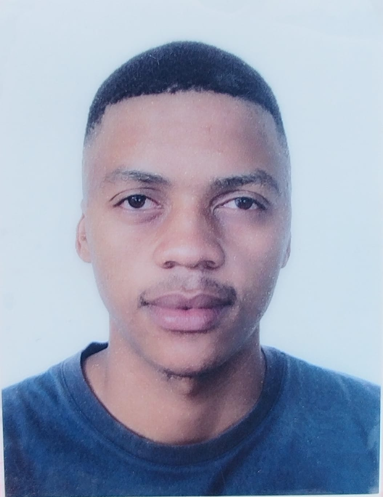

I am a dedicated motivated IT student passionate about technology and research in the field. I enjoy exploring new innovations, understanding how technology can improve lives, and continuously learning new concepts.
Get in TouchI am a dedicated motivated IT student passionate about technology and research in the field. I enjoy exploring new innovations, understanding how technology can improve lives, and continuously learning new concepts.
North West University (Vaal), South Africa | 2023 – Present
Expected Graduation: 2027 | Academic Standing: Good Academic Standing
Relevant Modules:
English | Setswana | Zulu (Basic)
Seeking to leverage academic knowledge and technical skills in a professional environment. Committed to continuous learning and contributing to innovative technology solutions while developing expertise in system analysis and IT Project management.